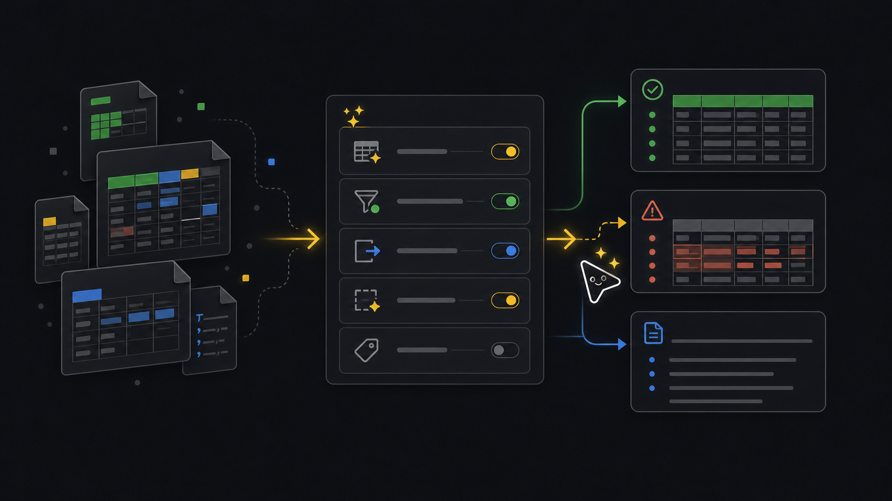

Utilities
Spreadsheet prep.
Use utility preparation when a spreadsheet, CSV, or document describes work a human understands, but the CLI needs clean rows with real identifiers before anything can run.
Ask an agent
Ask for a prepared workflow input. The workflow separates understanding the file from executing tenant changes.
Prepare this spreadsheet for a CLI workflow.
If I did not give a file path, ask for it.
Ask what the file should become: Edge claim rows, a space tree, device moves, access rows, connector setup, or another supported action.
Show the selected action, primary file, rejected file, notes file, and rows that still need user input.
Stop before executing the prepared rows.Workflow
- SourceRead fileStart from the spreadsheet and the user’s goal.
- ActionPick profileMatch the goal to a supported utility action.
- PrepareCreate filesWrite primary rows, rejected rows, and notes.
- ReviewFix gapsSurface missing ids or rows that need a human decision.
- PauseDo not executeStop before any workflow consumes the prepared rows.
Goal
Preparation separates understanding from execution. The CLI creates structured files. A human or agent reviews missing identifiers and rejected rows. Only then should a workflow run.
Commands
Find the supported action
Do this first so you do not force the wrong spreadsheet shape into the wrong workflow.
xyte-cli util list-actions \ --format text \ --mode friendlyPrepare Edge claim rows
Use this for devices behind an Edge proxy. Required columns include proxy id, device IP, model id, and space id.
xyte-cli util prepare \ --action organization.edge.startClaim \ --input <input.xlsx> \ --tenant <tenant-id> \ --output-dir ./preparedPrepare a space tree import
Use this when a hierarchy source needs to become rows with
path,space_type, andconfig.xyte-cli util prepare \ --action space.import-tree \ --input <input.xlsx> \ --tenant <tenant-id> \ --output-dir ./preparedPrepare device moves
Use this when the source file already identifies devices and intended target spaces.
xyte-cli util prepare \ --action device.move \ --input <input.xlsx> \ --tenant <tenant-id> \ --output-dir ./prepared
Review the outputs
- The primary file contains rows that match the selected action profile.
- The rejected file contains rows that need missing ids, corrected formats, or a different workflow.
- The notes file explains columns, reject reasons, and safe next commands.
- Unknown identifiers should stay rejected until a user provides real values.
./prepared/organization-edge-startclaim.csv
./prepared/organization-edge-startclaim.rejected.csv
./prepared/organization-edge-startclaim.notes.mdYou are done when the primary file has only rows you are willing to execute and the rejected file has been reviewed instead of ignored.
If it fails
Check whether the selected action matches the source. If not, choose a different action and prepare again.
Look them up in Xyte or ask the user. Do not invent ids to make the CSV look complete.
Use the workflow command that matches the action, such as edge claim-batch, util import-tree, or util move-devices. Run dry mode first.